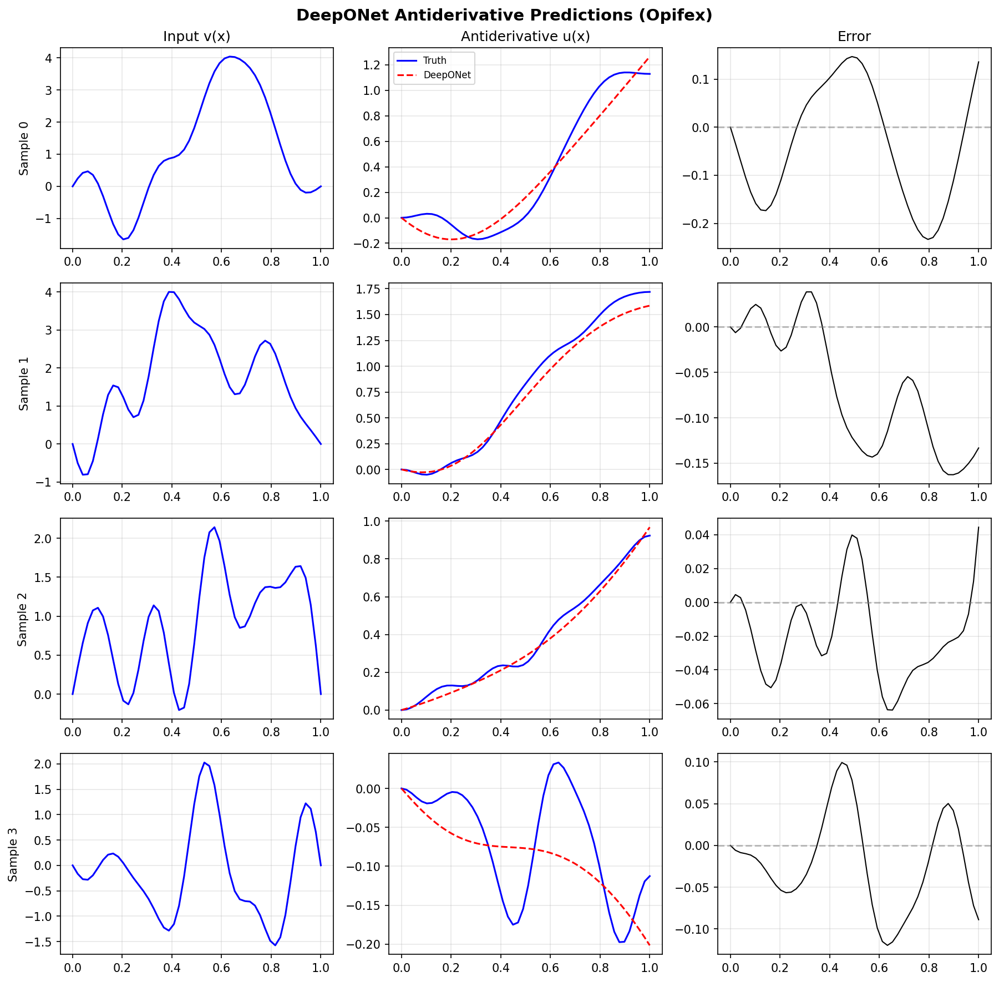

DeepONet on Antiderivative¶
| Metadata | Value |
|---|---|
| Level | Beginner |
| Runtime | ~30s (CPU) / ~5s (GPU) |
| Prerequisites | JAX, Flax NNX, Neural Operators basics |
| Format | Python + Jupyter |
| Memory | ~500 MB RAM |
Overview¶
This tutorial demonstrates training a DeepONet to learn the antiderivative operator, the canonical benchmark from the original DeepONet paper (Lu et al., 2021). Given a function v(x), the operator learns to predict u(x) = ∫₀ˣ v(t) dt.
What makes this example foundational is the branch-trunk architecture: unlike FNO which operates on discretized fields, DeepONet separates function encoding (branch network) from location encoding (trunk network). This architecture enables evaluation at arbitrary query points without retraining, a key advantage for continuous operator learning.
What You'll Learn¶
- Understand the branch-trunk DeepONet architecture and its mathematical formulation
- Generate synthetic antiderivative operator data using GRF basis functions
- Implement custom training loop for operators with two distinct inputs
- Apply physics constraints via output transformations (zero IC: u(0) = 0)
- Evaluate with relative L2 error and per-sample analysis
Coming from DeepXDE?¶
If you are familiar with the DeepXDE library, here is how Opifex compares for this workflow:
| DeepXDE (TensorFlow/PyTorch) | Opifex (JAX) |
|---|---|
dde.nn.DeepONet([50, 128, 128, 64], [1, 128, 128, 64]) |
DeepONet(branch_sizes=[50, 128, 128, 64], trunk_sizes=[1, 128, 128, 64]) |
net.apply_output_transform(zero_ic) |
Custom apply_zero_ic() function |
dde.data.PDEOperatorCartesianProd() |
Custom NumPy data generation |
model.train(iterations=10000) |
Custom training loop with nnx.Optimizer |
| Implicit random state | Explicit rngs=nnx.Rngs(42) |
Key differences:
- Explicit PRNG: Opifex uses JAX's deterministic
rngs=nnx.Rngs(seed) - Custom training: DeepONet requires custom loop due to branch/trunk inputs
- XLA compilation: Use
@nnx.jitfor faster training - Functional transforms: Full access to
jax.grad,jax.vmapfor composability
Files¶
- Python Script:
examples/neural-operators/deeponet_antiderivative.py - Jupyter Notebook:
examples/neural-operators/deeponet_antiderivative.ipynb
Quick Start¶
Run the Python Script¶
Run the Jupyter Notebook¶
Core Concepts¶
The Antiderivative Operator¶
The antiderivative operator maps a function v(x) to its integral u(x):
With the boundary condition u(0) = 0, this defines a unique mapping from v to u. The neural operator learns this mapping from data without explicit integration.
| Variable | Meaning | Role |
|---|---|---|
| v(x) | Input function | Sampled at sensor locations |
| u(x) | Antiderivative | Output to predict |
| x ∈ [0, 1] | Spatial coordinate | Query location |
DeepONet Architecture¶
DeepONet separates the encoding of input functions from evaluation locations:
graph TB
subgraph Branch["Branch Network (Function Encoder)"]
A["v(x₁), v(x₂), ..., v(xₙ)<br/>Input function at sensors"] --> B["MLP<br/>50 → 128 → 128 → 64"]
B --> C["Branch embedding<br/>b ∈ R^64"]
end
subgraph Trunk["Trunk Network (Location Encoder)"]
D["Query location x<br/>x ∈ [0, 1]"] --> E["MLP<br/>1 → 128 → 128 → 64"]
E --> F["Trunk embedding<br/>t ∈ R^64"]
end
subgraph Output["Combination"]
C --> G["Dot Product<br/>u(x) = ⟨b, t⟩"]
F --> G
G --> H["Zero IC Transform<br/>u(x) × x"]
H --> I["Output u(x)"]
end
style A fill:#e3f2fd,stroke:#1976d2
style D fill:#fff3e0,stroke:#f57c00
style I fill:#c8e6c9,stroke:#388e3cThe key insight is that the branch network processes the entire input function once, while the trunk network processes each query location independently. The output is their dot product, enabling efficient evaluation at many query points.
Why Branch-Trunk Architecture?¶
| Feature | DeepONet (Branch-Trunk) | FNO (Spectral) |
|---|---|---|
| Query flexibility | Any continuous point | Fixed grid |
| Input representation | Function samples | Discretized field |
| Receptive field | Global (via branch) | Global (via FFT) |
| Best for | Irregular geometries, point queries | Regular grids, PDEs |
Zero Initial Condition Constraint¶
The antiderivative must satisfy u(0) = 0. Instead of adding a penalty loss, we enforce this exactly via output transformation:
This guarantees u(0) = 0 regardless of network weights.
Implementation¶
Step 1: Imports and Setup¶
import time
import warnings
from pathlib import Path
warnings.filterwarnings("ignore")
import jax
import jax.numpy as jnp
import matplotlib.pyplot as plt
import numpy as np
import optax
from flax import nnx
from opifex.neural.operators.deeponet import DeepONet
Terminal Output:
======================================================================
Opifex Example: DeepONet on Antiderivative Operator
======================================================================
JAX backend: gpu
JAX devices: [CudaDevice(id=0)]
Step 2: Configuration¶
N_SENSORS = 50 # Sensor points for input function
N_TRAIN = 1000 # Training samples
N_TEST = 200 # Test samples
BATCH_SIZE = 32
NUM_EPOCHS = 100
LEARNING_RATE = 1e-3
LATENT_DIM = 64 # Branch/trunk output dimension
SEED = 42
Terminal Output:
Sensors: 50
Training samples: 1000, Test samples: 200
Batch size: 32, Epochs: 100
Learning rate: 0.001, Latent dim: 64
| Hyperparameter | Value | Purpose |
|---|---|---|
N_SENSORS |
50 | Number of input function sample points |
LATENT_DIM |
64 | Shared embedding dimension |
N_TRAIN |
1000 | Training dataset size |
NUM_EPOCHS |
100 | Training iterations |
Step 3: Data Generation¶
Generate input functions using a Gaussian Random Field (GRF) basis with random Fourier coefficients:
def generate_grf_function(x, n_modes, rng):
"""Generate smooth random function using sine basis."""
coeffs = rng.standard_normal(n_modes)
decay = 1.0 / (np.arange(1, n_modes + 1) ** 0.5) # Smoothness
coeffs = coeffs * decay
v = np.zeros_like(x)
for k in range(n_modes):
v += coeffs[k] * np.sin((k + 1) * np.pi * x)
return v
def compute_antiderivative(x, v):
"""Compute u(x) = ∫₀ˣ v(t) dt via trapezoidal rule."""
dx = x[1] - x[0]
u = np.zeros_like(v)
u[1:] = np.cumsum(0.5 * (v[:-1] + v[1:])) * dx
return u
Terminal Output:
Generating antiderivative dataset...
Training data: branch=(1000, 50), trunk=(50, 1)
Training targets: (1000, 50)
Test data: branch=(200, 50), targets=(200, 50)
Input: function values v(x) at 50 sensors
Output: antiderivative u(x) at 50 locations
Data Shapes
- Branch input:
(batch, n_sensors)- function values at sensor locations - Trunk input:
(n_locations, 1)- query coordinates (shared across batch) - Target:
(batch, n_locations)- antiderivative values
Step 4: Model Creation¶
DeepONet requires matching output dimensions for branch and trunk networks:
model = DeepONet(
branch_sizes=[N_SENSORS, 128, 128, LATENT_DIM], # 50 → 64
trunk_sizes=[1, 128, 128, LATENT_DIM], # 1 → 64
activation="tanh",
rngs=nnx.Rngs(SEED),
)
Terminal Output:
Creating DeepONet model...
Model: DeepONet
Branch network: 50 → 128 → 128 → 64
Trunk network: 1 → 128 → 128 → 64
Latent dimension: 64
Total parameters: 56,320
Branch/Trunk Size Matching
branch_sizes[-1] must equal trunk_sizes[-1] (the latent dimension).
The dot product of these embeddings produces the output.
Step 5: Custom Training Loop¶
DeepONet requires a custom training loop because it has two distinct inputs:
opt = nnx.Optimizer(model, optax.adam(LEARNING_RATE), wrt=nnx.Param)
def apply_zero_ic(predictions, x_coords):
"""Enforce u(0) = 0 by multiplying by x."""
return predictions * x_coords.squeeze()
@nnx.jit
def train_step(model, opt, x_branch, x_trunk, y_target):
def loss_fn(model):
batch_size = x_branch.shape[0]
trunk_batch = jnp.broadcast_to(x_trunk[None], (batch_size, *x_trunk.shape))
y_pred = model(x_branch, trunk_batch)
y_pred = apply_zero_ic(y_pred, x_trunk)
return jnp.mean((y_pred - y_target) ** 2)
loss, grads = nnx.value_and_grad(loss_fn)(model)
opt.update(model, grads)
return loss
Terminal Output:
Setting up training...
Optimizer: Adam (lr=0.001)
Starting training...
Epoch 1/100: train_loss=0.050603, val_loss=0.029469
Epoch 20/100: train_loss=0.007051, val_loss=0.008144
Epoch 40/100: train_loss=0.003344, val_loss=0.003918
Epoch 60/100: train_loss=0.003260, val_loss=0.003864
Epoch 80/100: train_loss=0.003127, val_loss=0.003372
Epoch 100/100: train_loss=0.003279, val_loss=0.003349
Training completed in 5.0s
Final train loss: 0.003279
Final val loss: 0.003349
Step 6: Evaluation¶
Terminal Output:
Running evaluation...
Test MSE: 0.003349
Test Relative L2: 0.199779
Min Relative L2: 0.030667
Max Relative L2: 0.890716
Step 7: Visualization¶
Sample Predictions¶
The DeepONet learns to predict the antiderivative from input function samples:

Training Progress¶
Loss curves and error distribution analysis:

Results Summary¶
Terminal Output:
======================================================================
DeepONet Antiderivative example completed in 5.0s
Test MSE: 0.003349, Relative L2: 0.199779
Results saved to: docs/assets/examples/deeponet_antiderivative
======================================================================
| Metric | Value | Notes |
|---|---|---|
| Test MSE | 0.0033 | Mean squared error |
| Mean Relative L2 | 0.20 | ~20% average relative error |
| Min Relative L2 | 0.031 | Best per-sample error |
| Max Relative L2 | 0.89 | Worst per-sample error |
| Training Time | 5.0s | On GPU (CudaDevice) |
| Parameters | 56,320 | Branch + Trunk networks |
What We Achieved¶
- Built DeepONet with separate branch (function) and trunk (location) networks
- Generated antiderivative data using GRF basis functions
- Enforced zero IC constraint via output transformation
- Achieved ~20% relative L2 error with smooth input functions
- Visualized predictions showing accurate antiderivative approximation
Interpretation¶
The DeepONet learns the antiderivative operator effectively for smooth GRF-based functions. Error is typically largest near x=1 where the integral accumulates. The output transformation guarantees u(0)=0 exactly, demonstrating how physics constraints can be built into the architecture.
Next Steps¶
Experiments to Try¶
- Different input distributions: Try step functions, polynomials, or mixtures
- Physics-informed loss: Add du/dx = v constraint as soft regularization
- More sensors: Increase
N_SENSORS=100for better function resolution - Fourier-enhanced: Try
FourierEnhancedDeepONetfor spectral input functions - 2D operators: Extend to 2D integration problems
Related Examples¶
| Example | Level | What You'll Learn |
|---|---|---|
| DeepONet on Darcy Flow | Intermediate | 2D operator learning with grid data |
| FNO on Burgers Equation | Intermediate | Spectral operator for temporal evolution |
| FNO on Darcy Flow | Intermediate | Grid embedding with FNO |
| Operator Comparison Tour | Advanced | Compare all operator architectures |
API Reference¶
DeepONet- Branch-trunk neural operatornnx.Optimizer- Flax NNX optimizer wrapperoptax.adam- Adam optimizer
Troubleshooting¶
Shape mismatch in forward pass¶
Symptom: ValueError about incompatible shapes for branch/trunk.
Cause: Trunk input not properly broadcasted to batch dimension.
Solution: Use jnp.broadcast_to to replicate trunk across batch:
batch_size = x_branch.shape[0]
trunk_batch = jnp.broadcast_to(x_trunk[None], (batch_size, *x_trunk.shape))
y_pred = model(x_branch, trunk_batch)
Latent dimension mismatch¶
Symptom: AssertionError or shape error during model construction.
Cause: branch_sizes[-1] != trunk_sizes[-1].
Solution: Ensure both networks have the same output dimension:
LATENT_DIM = 64
model = DeepONet(
branch_sizes=[..., LATENT_DIM], # Must match
trunk_sizes=[..., LATENT_DIM], # Must match
)
High error near x=0 despite zero IC constraint¶
Symptom: Predictions deviate near x=0 even though u(0)=0 is enforced.
Cause: The zero IC transform u × x can amplify errors for small x.
Solution: This is expected behavior. The constraint ensures u(0)=0 exactly, but gradient near zero may vary. For stricter near-zero behavior, consider adding a loss term penalizing |∂u/∂x|² near x=0.
Training doesn't converge¶
Symptom: Loss plateaus at high value or oscillates.
Solution: